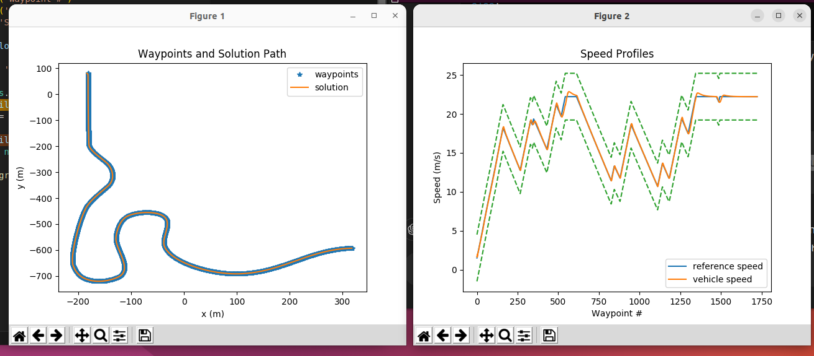

01 / Simulation
Below are visualizations from a final simulation run with a racetrack.

02 / Looking Ahead
Implementing a collision warning system estimating a 3D drivable space, using semantic lane estimation, and object detection using semantic segmentation.
Check out the GitHub repo.